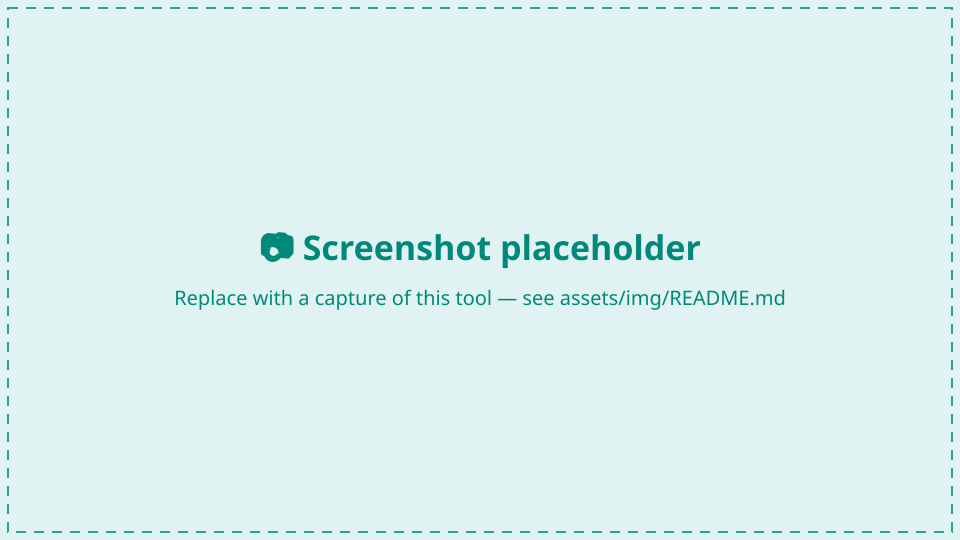

Seafloor Roughness¶
Measure the physical roughness of the seabed in the current HabCam frame — from the stereo imagery itself, independently of the acoustics. It gives you a quantitative texture descriptor to set beside the backscatter, plus a real-height micro-DEM of the patch the camera is looking at.

Open it with the cubes icon on the GroundTruther toolbar; it docks on the right and follows whichever frame the Image Browser is on.
How it works¶
Roughness is computed server-side. GroundTruther sends only the current
frame's identifier — its Imagename, e.g.
201503.20150619.181140656.204627 — and the service reads the stereo pair from
its own archive, runs stereo matching (RAFT-Stereo on a GPU), and returns the
metrics plus whatever optional rasters you asked for. No image bytes leave your
machine.
Two transports, same request and response:
- Through FastGIS (the normal case) —
POST /seafloor/roughnesswith yourX-API-Key. It reuses the GRASS credentials, so if the GRASS toolbox works, roughness works. - Direct — set
Roughness.direct_urlto POST straight at the GPU service with no auth. Only useful when QGIS is running on the GPU host itself.
Configure both in Settings → Seafloor roughness. If neither the FastGIS credentials nor a direct URL are set, the panel says "roughness service not configured" and does nothing else.
First call is slow
The GPU model loads lazily — expect ~14 s for the first frame of a session and ~0.5 s afterwards. Requests run as background QGIS tasks, so the UI stays responsive, and results are cached per frame so revisiting a frame is instant.
Metrics tab¶
Press Compute roughness, or tick Auto to recompute every time you browse to a new frame.
| Read-out | What it is |
|---|---|
| γ₂ (the big number) | The spectral exponent — the slope of the relief power spectrum. This is the load-bearing output: it describes the texture/fractal character of the surface, it is robust across stereo matchers, and it is the metric this tool adds on top of backscatter. |
| Substrate line | An indicative read off γ₂ and rugosity — "fine / bioturbated", "firmer / smoother", or "intermediate". It is a hint, not a classification. |
| Texture line | Ripples vs bioturbation for this frame, from the spectrum's anisotropy, dominant orientation and wavelength. |
| w2 | Spectral strength, reported in cm⁴ (APL-UW/Jackson convention). Colour-coded per frame by the service's own trust flag. |
| rms height | RMS relief in mm. Same per-frame trust gate as w2. |
| rugosity | Surface-area ratio. |
| altitude | The service's altitude estimate — cross-check it against the frame's Altimeter metadata; they should agree to a few centimetres. |
| quality | ok, insufficient_coverage, or spectrum_fit_failed. |
| matcher | raft, sgbm, or sgbm(fallback). |
Trust γ₂; do not trust w₂'s absolute value
When quality is not ok, every roughness field is null — the panel
shows that rather than fabricating a number.
Even when it is ok, the absolute amplitude of w₂ is not reliable from
current stereo: a RAFT-vs-SGBM comparison found no consistent bias between
matchers. The panel colours w₂ and rms height green only when the service
flags that frame as physically plausible with a clean fit — which is rarely.
Use γ₂, rugosity, anisotropy and relative rms height as your physical
features; do not feed w₂'s absolute value into a physical inversion.
Two checkboxes control how much work the service does — request only what you will actually look at:
- 3-D surface + photo (real heights) — fetches the real-height micro-DEM grid and the co-registered orthophoto, so the Micro-DEM 3D tab can show a photo-textured surface. Slower.
- 2-D height overlay on image — fetches the per-pixel height raster and the rectified-left preview and drapes them on the displayed image. Slower.
Spectrum tab¶
The radial relief power spectrum on log-log axes: W (m⁴) against K (rad/m), with the fitted power law overlaid as a straight line of slope −γ₂, the fit band shaded, and γ₂ / w₂ / R² annotated.
This is the diagnostic that tells you whether to believe the number on the Metrics tab:
- Where the measured curve peels away from the fit line at high K, you are seeing the stereo noise floor, not the seabed.
- A flat or clearly anisotropic spectrum flags ripples — the radial average assumes isotropy, so γ₂ means less there.
The spectrum is always requested; it is a small payload.
Micro-DEM 3D tab¶
The real-height micro-DEM as an interactive 3-D mesh, draped with the orthophoto as a 1:1 texture (one texel per vertex) when the surface outputs were requested. Heights are in millimetres and sit near −altitude, so the mesh is a true representation of the patch under the camera, not a high-passed roughness field.
The stereo DEM is unreliable at the grid border and around no-data holes, which
otherwise shows up as spikes draped in stretched texture. Three live controls
mask them; their starting values come from
Roughness.dem_trim_border / dem_clip_sigma / dem_erode:
- Trim border — drop N outer rings of the grid.
- Clip σ — reject cells more than N robust sigmas from the median height.
- Erode — peel N rings off every no-data / outlier boundary.
Masked cells are flattened to the median and made transparent in the texture.
Georeferencing (Georef tab)¶
Tick Georeference and GroundTruther attaches the frame's navigation to the request. The service returns a geotransform, and the plugin writes the outputs as GeoTIFFs and adds them to your project:
| Output | Raster |
|---|---|
| Micro-DEM | 1-band Float32, heights in mm, NaN no-data |
| Orthophoto | 3-band RGB |
| Mosaic | 3-band RGB, or 4-band RGBA with Transparent border ticked |
Both land in your survey CRS, so they overlay the bathymetry and backscatter directly.
QGIS redraws rotated rasters north-up
The geotransform is a rotated affine — the grid is aligned to the vehicle's heading, not to north. QGIS's GDAL provider warps such a raster to north-up for display, which makes it report a larger bounding box and add an alpha band. That is expected: the file on disk and its georeferencing are correct.
The position that is used¶
Georeferencing uses the calibrated USBL fix — Xutm + dx, Yutm + dy — the
same position as the red map marker and the query builder's sampling centre, so
the raster, the marker and the sample all coincide. It is not the ship GPS and
not the layback model. See
Image metadata → Positioning.
Heading offset vs Mirror¶
These two controls fix different things and are not interchangeable.
| Control | What it is | Symptom that calls for it |
|---|---|---|
| Heading offset | A continuous rotation in degrees, added to the navigation heading before the server computes the geotransform. | Rasters are consistently rotated relative to the bathymetry — features line up in shape but sit at an angle, and the error is the same angle on every frame. |
| Mirror | A discrete handedness flip — a reflection of the port/starboard axis. | A mosaic comes out port/starboard-flipped: features are mirror images of the real seabed, and successive frames lay down in the wrong lateral order. |
The distinction matters because no rotation can undo a reflection. If the imagery is mirrored, turning the heading offset will move the error around the compass but never remove it — you will chase it forever. Ask: does the picture look rotated, or does it look flipped? Rotated → heading offset. Flipped → Mirror, once.
The mount is known (image bottom→top = heading, image-right = starboard), so the
defaults — offset 0, mirror off — are correct out of the box for the reference
deployment. Treat both as escape hatches.
Saved calibration overrides the config¶
Why editing Settings appears to do nothing
Save calibration stores georeference, epsg, heading_offset_deg and
mirror in QgsSettings, keyed by a hash of your image-metadata file
path — i.e. per dataset. Once a dataset has a saved calibration, that
wins, and the Roughness.* values in config.yaml are only the fallback
for datasets which have none.
So if you edit those four keys in Settings and see no change, it is because this dataset is already calibrated. Change them on this tab instead.
The other nine Roughness.* keys — service, route, direct URL, resolution,
n-water, DEM size and the three mesh-mitigation knobs — are not part of
the saved calibration and always come from the config.
Changing any of the four re-requests the current frame immediately, so you can see the effect straight away. Clear georef layers removes the rasters this panel added to the project.
Mosaic¶
The Georef tab also builds a georeferenced mosaic of the frames around the current one: pick a window (± N contiguous frames), a mode, and press Build mosaic. The service pulls the navigation for the window itself and skips frames whose image is missing from its archive.
| Mode | How frames are placed |
|---|---|
| Auto (default) | Chooses per window from the nav-predicted overlap: piled-up frames with plenty of shared content → pixel; well-spread frames → flat. |
| Flat | By navigation alone (position, heading, flat-seabed scale). Fast; best when the nav is accurate. |
| Ortho | Relief-corrected per-frame orthophoto, then nav placement. Slowest. |
| Pixel | Registered by image content, georeferenced through the reference frame's nav. Use when the nav is too coarse and frames pile up. |
Two presets set the rest for you: Browse (3 mm, anti-aliased, fast overview) and Publication (ortho, 0.8 mm, lanczos, 8192 px, RGBA).
When the mosaic is nav-placed anyway
Featureless seabed — smooth mud with no clasts — cannot be content-registered by any method. In pixel and auto modes the service reports how many frame pairs it actually registered by content, and GroundTruther shows a banner when that fraction is low ("only 0/10 pairs registered — low texture, mosaic is nav-placed"). That is a limit of the data, not a fault: read the mosaic as nav-accurate, not pixel-accurate, in those stretches.
Illumination correct (flat-fields the strobe vignette and equalises brightness) and Gain compensate are on by default and are what make a mosaic look continuous. Turn illumination correction off for absolute-radiometry work — it deliberately normalises radiometry.
Settings summary¶
| Setting | What it is |
|---|---|
Processing.grass_api_endpoint, Processing.grass_api_key |
The credentials roughness reuses. |
Roughness.base_url, Roughness.route, Roughness.direct_url |
Override the transport. Empty = reuse FastGIS. |
Roughness.res_mm, Roughness.n_water, Roughness.dem_max_side |
Compute knobs. Leave the first two unset. |
Roughness.georeference, epsg, heading_offset_deg, mirror |
Georeferencing defaults — overridden by a saved per-dataset calibration. |
Roughness.dem_trim_border, dem_clip_sigma, dem_erode |
Starting values for the 3-D mesh mitigation controls. |
Full descriptions in the settings reference.